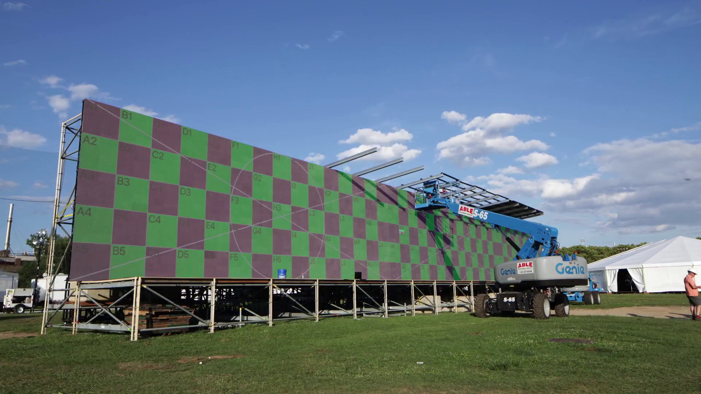
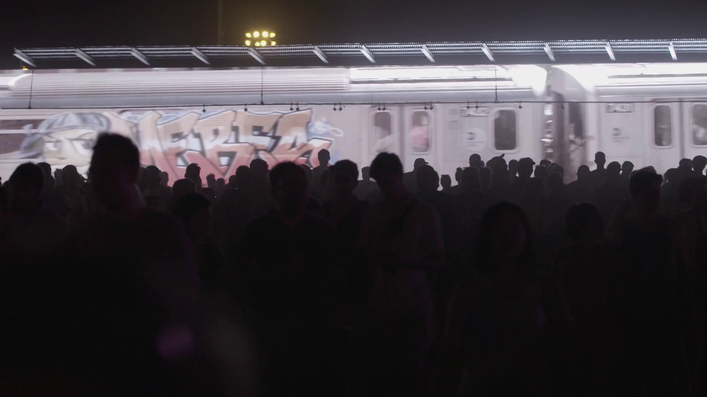
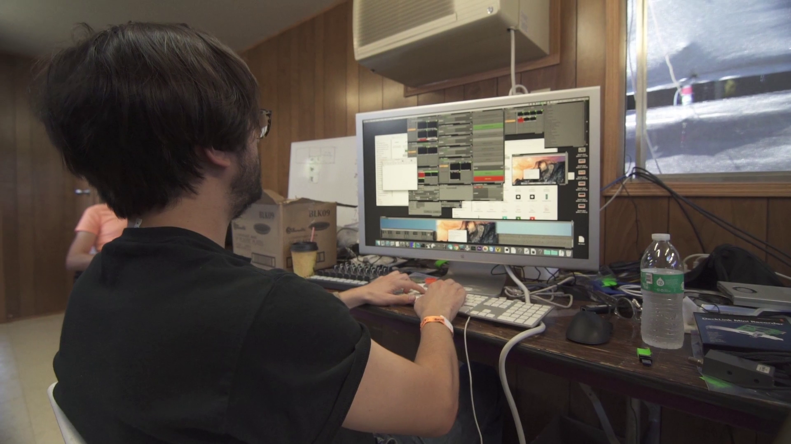
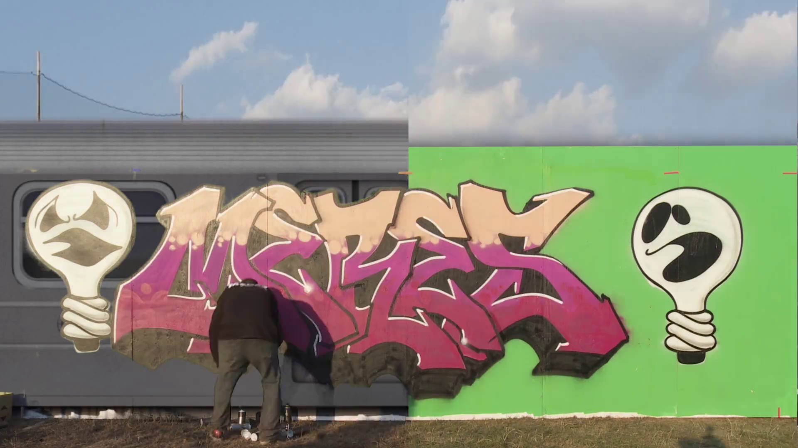
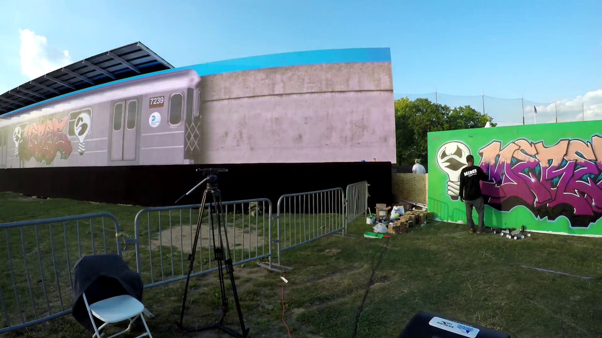
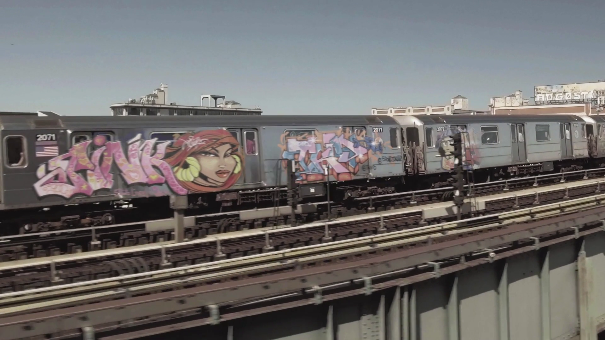
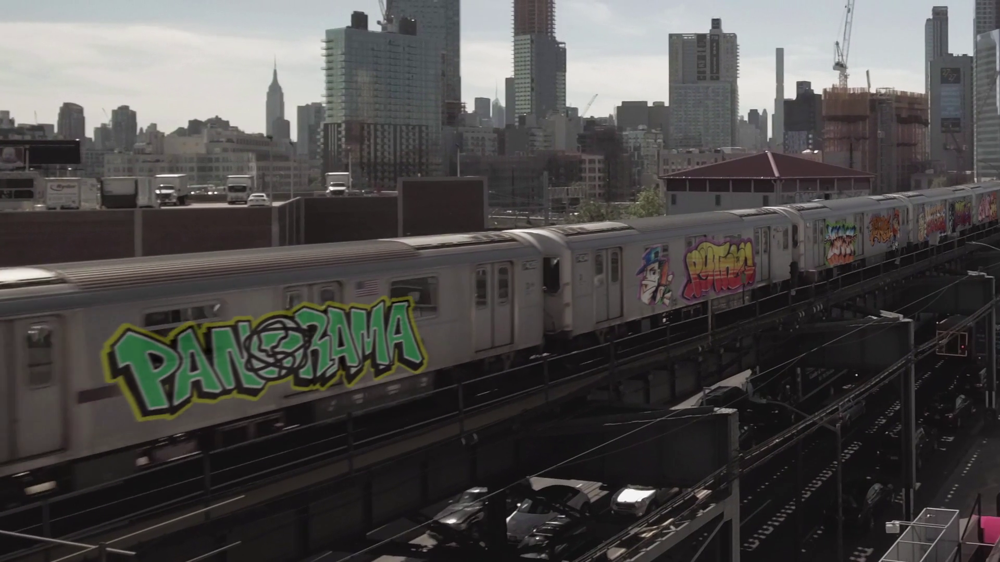

← Back to Projects
https://www.aststudios.com/portfolio/ace-microdoc/
All City Express (A.C.E.)
Medium: Large Scale Interactive Installation
Year: 2019
Role: Lead Developer
Context: Panorama Music Festival / 75,000 attendees
The All City Express (A.C.E.), an interactive art installation at the Panorama music festival in New York City pays homage to graffiti art’s NYC roots while looking towards its virtual future by combining cutting-edge motion capture technology and life-size high-definition video displays to reimagine the Top to Bottom for the digital age.
Details
- Developed by AST Studios with Tangible Interaction.
- Curation by Meres One and Marie Flageul.
- Featuring works by Lady Pink, Tkid 170, Python, See, Meres One, Toofly, Jerms, and Topaz.
- AST Studios Credits:
- Director: Adam Teninbaum
- Lead Developer: Grayson Earle
- Director of Photography: Zachary Halberd
- Designers: Rita Louro, Ryan Berkey, Orges Kokoshari, Kris Merc

The main interactive screen, visible to the crowd.

The audience interacting with the installation.


Curator Meres One painting one of the featured works.


A 3D render of the initial concept.

An alternative render showing the scale of the project.